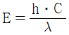

방사선비파괴검사기사 (2018-09-15 기출문제)
1과목: 비파괴검사 개론
1. 비파괴검사의 결과를 전기 신호로 나타낼 수 없는 검사법은?
- 초음파탐상검사
- 누설자속탐상검사
- 와전류탐상검사
- 액체침투탐상검사
(정답률: 71%)

2. 방사선과 시험체가 상호작용을 일으킬 때 그 정도에 영향을 미치는 인자가 아닌 것은?
- 시험체의 두께
- 방사선의 에너지
- 시험체의 원자번호
- 시험체의 표피효과
(정답률: 73%)
3. 와류탐상검사를 적용할 때 다음 중 시험코일의 감도가 가장 높은 것은?
- 외경 0.4cm 구리 전선과 내경 1cm 코일
- 외경 1cm 구리 봉과 내경 2cm 코일
- 외경 2cm 알루미늄 봉과 내경 3cm 코일
- 내경 4cm 구리 관과 외경 3cm 코일
(정답률: 52%)
4. 비파괴검사의 신뢰도를 높이는 요인이 아닌 것은?
- 기술자의 기량
- 검사기법의 적응성
- 결과의 평가기준
- 단일검사수법
(정답률: 68%)
5. 침투탐상시험의 하전입자법(Electrified Particle Test)에 관한 내용으로 틀린 것은?
- 정전기 효과(Static Electricity)
- 마찰전기효과(Triboelectric Effect)
- 분말은 대전량이 적은 것일수록 양호
- 양전기로 하전된 CaCO3 분말을 자분으로 사용
(정답률: 57%)
6. 쾌삭강에서 피삭성을 향상시키기 위해 첨가하는 것이 아닌 것은?
- Mn
- Pb
- S
- Se
(정답률: 38%)
7. 마그네슘(Mg) 및 그 합금의 특징을 설명한 것 중 옳은 것은?
- Mg의 비중은 약 2.7이다.
- 비강도(강도/중량)가 낮다.
- 고온에서 매우 안정적이다.
- 감쇠능의 주철보다 커서 소음방지 재료로 사용 가능하다.
(정답률: 67%)
8. 냉간가공(cold working)에 대한 설명으로 옳은 것은?
- 전위밀도가 감소하여 강도가 약해진다.
- 냉간가공은 재결정온도 이상에서 가공한 것을 말한다.
- 냉간가공으로 생긴 잔류응력이 재료 내에 압축응력으로 작용하여 피로강도가 나빠진다.
- 항복점연신을 나타내는 강을 항복점 이상으로 냉간가공하게 되면 항복점연신이 없어진다.
(정답률: 45%)
9. 다음 중 강의 경화능을 알아보기 위한 시험법으로 가장 적절한 것은?
- 압축시험
- 조미니시험
- 크리프시험
- 설퍼프린트시럼
(정답률: 57%)
10. Al-Si 합금인 실루민의 설명으로 옳지 않은 것은?
- 금속나트륨 등으로 개량처리를 한다.
- Al과 Si의 합금은 공정반응을 갖는다.
- 유동성이 좋기 때문에 얇고 복잡한 주물에 이용된다.
- 다이캐스팅 할 때는 용탕이 서냉되어 조대한 조직이 형성된다.
(정답률: 52%)
11. 분말야금법을 이용한 제조법의 특징을 설명한 것 중 옳은 것은?
- 용융점이 높은 재료의 경우에도 용융하지 않고 제품을 제조할 수 있다.
- 제품의 크기에는 제한이 없고, 제품형상의 제한이 크다.
- 후가공으로 절삭가공이 필수적이다.
- 제품 내 기공이 존재한다.
(정답률: 54%)
12. 황동의 조직에 관한 설명 중 틀린 것은?
- 황동은 6개의 상을 가지고 있다.
- β상은 조밀육방격자를 갖는다.
- α상은 면심입방격자를 갖는다.
- α상은 구리에 아연을 고용한 상이다.
(정답률: 46%)
13. 해드필드(Hadfied) 강에 대한 설명으로 옳지 않은 것은?
- 수인처리를 한다.
- 열전도성이 나쁘다.
- 가공경화성이 크다.
- 열변형을 일으키지 않는다.
(정답률: 42%)
14. 저온 풀림 경화시킨 스플링강재가 사용 중 시간의 경과에 따라 경도 등의 물성이 악화되는 현상은?
- 가공변화
- 경년변화
- 소성변화
- 자성변화
(정답률: 63%)
15. 다음 경도시험 중 대면각이 136°인 다이아몬드 사각추 압입자를 사용하는 것은?
- 누프 경도시험
- 브리넬 경도시험
- 비커스 경도시험
- 로크웰 경도시험
(정답률: 46%)
16. 다음 중 금속원자가 상온에서 원자 간의 인력에 의해 접합할 수 있는 거리로 옳은 것은?
- 10-7cm
- 10-8cm
- 10-9cm
- 10-10cm
(정답률: 64%)
17. 용접 후 잔류응력을 제거하거나 완화시키는 방법이 아닌 것은?
- 피닝법
- 역변형법
- 노 내 풀림법
- 저온 응력 완화법
(정답률: 53%)
18. TIG 용접으로 판 두께 3mm의 알루미늄 판을 용접하려고 할 때 용접 전원으로 가장 적합한 것은?
- ACHF
- DCRP
- DCSP
- 전원이 필요 없음
(정답률: 66%)
19. 용접의 시작이나 끝부분에 생기는 결함을 방지하기 위해 용접이음 부분에 붙여 용접하고 나중에 제거하는 것은?
- 엔트 탭
- 크레이터
- 비드 종단
- 스카핑
(정답률: 59%)
20. 모재의 두께가 6mm인 강판을 가스용접 하려고 한다. 이 때 사용할 용접봉의 지름으로 가장 적당한 것은?
- 1mm
- 2mm
- 4mm
- 6mm
(정답률: 55%)
2과목: 방사선투과검사 원리
21. 작동주기가 50%인 X선 발생장치로 주강품을 촬영 하였을 때에 3분간 노출하였다면, 이 장치의 휴지시간은 얼마인가?
- 1.5분
- 3.0분
- 4.5분
- 6.0분
(정답률: 71%)
22. Tm-170의 반감기는 약 127일이다. 이 때 붕괴상수(λ)로 옳은 것은?
- 약 0.0⑤
- 약 0.006
- 약 0.007
- 약 0.008
(정답률: 48%)
23. Cf-252(Californium-252) 선원에 관한 설명으로 틀린 것은?
- 작은 2개의 핵이 큰 원자핵으로 합쳐진다.
- 자발 핵분열 물질이다.
- 1μg은 초당 2백만개 이상의 중성자를 방출한다.
- 큰 핵이 두 개의 핵으로 쪼개질 때에 2~4개의 중성자를 방출한다.
(정답률: 50%)
24. 동위원소 세슘-137의 특성으로 틀린 것은?
- 15cm 이상의 두꺼운 강에 효과적이다.
- 방사성 물질로 반감기가 30.1년이다.
- 코발트-60보다 에너지가 낮다.
- 화학적으로 활성이기 때문에 염화물(CcCl)형태로 이용된다.
(정답률: 57%)
25. 비방사능에 대한 설명으로 틀린 것은?
- 동위원소의 단위 질량당 방사능의 세기를 의미한다.
- 비방사능이 높으면 선명도가 감소한다.
- 단위는 Bq/g을 사용한다.
- 비방사능이 높으면 자기흡수가 적다.
(정답률: 64%)
26. 방사선투과사진의 현상처리에서 정착시간으로 가장 적당한 것은?
- 크리어링(Clearing) 시간의 0.5배
- 정지시간의 0.5배
- 크리어링(Clearing) 시간의 2배
- 정지시간의 2배
(정답률: 58%)
27. 방사선투과검사에서 방사선흡수(radiation absorption)의 분류가 아닌 것은?
- 광자 흡수
- 하전입자 흡수
- 중성자 흡수
- 탄성산란
(정답률: 63%)
28. 방사선투과검사에서 자동현상 시스템이 아닌 것은?
- 광학시스템
- 보충시스템
- 건조시스템
- 순환시스템
(정답률: 74%)
29. X선과 γ선의 일반적 특성을 설명한 것으로 틀린 것은?
- 에너지는 침투력을 결정한다.
- X선과 γ선은 에너지의 파형이다.
- 에너지는 keV나 MeV로 측정된다.
- 짧은 파장과 낮은 주파수를 갖는다.
(정답률: 67%)
30. 방사선투과검사에서 연박증감지를 사용할 경우 X선 필름에 감광시키는 역할을 하는 것은?
- 양자
- 전자
- α입자
- 중앙자
(정답률: 73%)
31. 방사성 붕괴 중 원자번호가 2만큼 감소되는 붕괴는?
- β- 붕괴
- α 붕괴
- β+ 붕괴
- γ 붕괴
(정답률: 66%)
32. 방사선투과검사에서 필름 입상성의 설명으로 틀린 것은?
- 입상성이 클수록 선명하다.
- 입상성이 클수록 필름감광속도가 높다.
- 선질이 클수록 입상성이 커진다.
- 방시선의 투과량이 증가할수록 입상성이 증가한다.
(정답률: 46%)
33. 여기 상태에 있는 원자핵이 더 낮은 에너지 준위로 옳겨 질 때, X선을 외부로 방출하는 대신 햇의 전자를 방출하는 현상은?
- 경사효과
- 컴프톤산란
- 전자쌍생성
- 오제효과
(정답률: 65%)
34. 열형관선량계(TLD)에 관한 설명으로 틀린 것은?
- 감도가 좋고 측정범위가 넓다.
- 소자를 반복하여 사용할 수 있다.
- 방향의존성이 있으며 에너지 의존성이 크다.
- 판독장치가 필요하지 않으며 기록 보존이 쉽다.
(정답률: 74%)
35. X선의 이용을 원리에 따라 분류한 것으로 틀린 것은?
- 반사법
- 신란법
- 회절법
- 분광법
(정답률: 64%)
36. X선 발생장치의 표적(Target)으로 사용하는 물질에 대한 설명으로 틀린 것은?
- 원자번호가 높은 금속을 사용한다.
- 용융온도가 높아야 한다.
- 열전도성이 좋아야 한다.
- 높은 증기압을 가져야 한다.
(정답률: 77%)
37. γ선의 에너지 E, 파장 λ, 광속도 C라 할 때,

로 나타낸다. 이 때 h가 의미하는 것은?- 플랑크 상수
- 진공의 유전율
- 볼쯔만 정수
- 광자의 스핀수
(정답률: 68%)
38. 방사선의 종류 중 전하를 가지고 있는 것은?
- 자외선
- 중성미자
- 중양자
- 중성자
(정답률: 50%)
39. GM 계수관에 대한 설명으로 옳은 것은?
- 선량률을 측정할 수 없다.
- 2차 생성 이온쌍의 수에는 비례하지 않는다.
- 공간 방사선 측정기 중 가장 고감도이다.
- 저선량률에서 포화하는 단점이 있다.
(정답률: 62%)
40. X선 발생장치에서 표적 면이 X선 축에서 10°~30°의 각도를 가질 때 방사선의 최대강도를 얻는 것을 무엇이라 하는가?
- 스크린효과
- 경사효과
- 확산효과
- 컴프턴산란
(정답률: 66%)
3과목: 방사선투과검사 시험
41. 방사선투과검사에서 현상온도와 시간에 대한 설명으로 틀린 것은?
- 현상온도가 낮으면 현상시간이 증가한다.
- 현상온도가 높으면 콘트라스트는 증가하다가 일정 시간 이상에서는 포화되어 저하하는 경향이 있다.
- 감도를 높이기 위해 현상시간을 연장하는 경우에는 20℃에서 20분 정도가 좋다.
- 25℃이상에서는 현상작용이 신속히 진행되어 Fog의 원인이 된다.
(정답률: 75%)
42. 방사선투과검사에서 의사결함을 판별하기 위한 촬영기법이 아닌 것은?
- 액스선 회절법
- 각도법
- 확산법
- 격자법
(정답률: 60%)
43. 방사선투과검사의 필름 농도는 무엇에 따라 결정되는가?
- 방사선원으로부터 방출되는 방사선의 양
- 시험체에 도달하는 방사선의 양
- 시험체를 투과한 방사선의 양
- 필름의 감광유체에 흡수된 방사선의 양
(정답률: 68%)
44. 방사선 투과사진상에 황색얼룩이 생겼다. 이러한 얼룩이 발생치 않도록 하기 위한 대책으로 옳은 것은?
- 정착액을 교체하고 충분히 교반시킨다.
- 적정온도와 습도에서 서서히 건조시킨다.
- 저감도 필름과 증감계수가 낮은 증감지를 사용한다.
- 현상액을 충분히 교반하고 현상시간을 충분히 한다.
(정답률: 71%)
45. 다음 중 필름의 사진작용을 증대하는 연박증감지의 주된 요소는?
- 엑스선 흡수로 방출된 가시선
- 엑스선 흡수로 방출된 광전자
- 엑스선 흡수로 방출된 양전자
- 엑스선 흡수로 방출된 산란 음극선
(정답률: 48%)
46. Ir192, 200mCi로 5m에서 작업하는 경우의 주당 허용 작업시간은 얼마인가? (단, Ir192 선원에 대한 RHM값은 0.48이며, 주당 검사자의 허용피폭선량을 1000μSv/week이라 가정한다.)
- 16h/week
- 26h/week
- 36h/week
- 46h/week
(정답률: 55%)
47. 두께가 30mm이고, 선원쪽 표면에서 깊이 10mm위치에 결함이 있는 검사체를 SFD 300mm로 하여 방사선투과검사 하였다. 이 결함의 Ug(기하학적 분선명도)값은 약 얼마인가? (단, 초점의 크기는 2.0mm이고 검사체와 필름 사이의 거리는 없다고 가정한다.)
- 0.14mm
- 0.22mm
- 0.32mm
- 0.44mm
(정답률: 29%)
48. 방사선투과검사에 사용하는 엑스선 발생장치의 유리 엑스선관을 고진공으로 하는 이유로 틀린 것은?
- 고전압으로 유기된 자장방지
- 필라멘트 산화 방지
- 전극간 전기적 절연
- 공기 이온화 방지
(정답률: 55%)
49. 방사선투과검사를 위한 필름의 선정요건이 아닌 것은?
- 시험체의 두께
- 시험체의 재질
- 방사선의 에너지
- 투과도계의 종류
(정답률: 68%)
50. 방사선투과검사 시 필름의 입상성에 대한 설명으로 틀린 것은?
- 입상성은 방사선에너지가 증가함에 따라 감소한다.
- 입상성은 필름의 감광 속도가 증가함에 따라 증가된다.
- 입상성이 큰 필름은 콘트라스트가 좋아진다.
- 입상성이 큰 필름은 명료도가 나빠진다.
(정답률: 25%)
51. 방사선투과검사에서 투과사진의 현상처리과정에서 일어날 수 있는 인공결함은?
- 압흔
- 주름
- 정전기표시
- 스크린표시
(정답률: 70%)
52. 두께가 얇은 오스테나이트계 스텐리스강 주물을 엑스선을 사용하여 방사선투과검사를 실시하였을 때 나타날 수 있는 의사결함의 주된 원인은?
- 마이크로 조직에서의 반사
- 마이크로 조직에서의 회절
- 마이크로 조직에서의 굴절
- 마이크로 조직에서의 흡수
(정답률: 43%)
53. 방사선투과검사에서 산란선의 영향을 감소시키기 위해 시험체 쪽에 사용되는 것은?
- 마스크(Mask)
- 다이아프램(Diaphragm)
- 납콘(Lead Cone)
- 필터(Filter)
(정답률: 61%)
54. 엑스선 발생장치에서 관전압과 관전류를 모두 증가시킬 때 출력되는 엑스선과 관련하여 바르게 설명된 것은?
- 강도는 높아지고 에너지는 낮아진다.
- 강도가 낮아지고 에너지도 낮아진다.
- 강도는 낮아지고 에너지는 높아진다.
- 강도가 높아지고 에너지도 높아진다.
(정답률: 79%)
55. 방사선투과사진의 선명도에 영향을 미치는 기하학적 인자로 틀린 것은?
- 초점크기
- 초점-필름간거리
- 시험체-필름간거리
- 필름의 종류
(정답률: 63%)
56. 특수 방사선투과검사법의 이동방사선투과검사(In-motion Radiography)에 대한 설명으로 틀린 것은?
- 실린더형 시험체의 두께가 얇고 긴 길이이음 용접부에 적용한다.
- 이동 불선명도는 시험체 두께에 방사선 빔폭을 곱한 것을 선원-시험체간 거리로 나눈 값이다.
- 시험체의 선원쪽 면에서 방사선의 빔 폭이 클수록 선원 이동 속도는 작아진다.
- 방사선원의 이동속도가 느리면 과노출이 된다.
(정답률: 71%)
57. 방사선추과검사에서 촬영 시 시험체의 투과방향으로 산란되는 것을 무엇이라 하는가?
- 전방산란
- 측면산란
- 후방산란
- 외각산란
(정답률: 68%)
58. 컴퓨터방사선투과검사(CR)에 대한 설명으로 틀린 것은?
- 현상처리 과정이 없다.
- 형광체 판을 사용한다.
- CR 전용 선원이 필요하다.
- 감광속도가 일반 엑스선 검사보다 빠르다.
(정답률: 70%)
59. 방사선투과필름을 만들 때 사진작용의 감도를 높이기 위하여 사용하는 유제는?
- 할로겐화 은
- 초산 은
- 접착제
- 젤라틴
(정답률: 74%)
60. 방사선투과검사에서 시험체 콘트라스트에 영향을 미치지 않는 인자는?
- 시험체의 두께차
- 방사선 선질
- 필름의 종류
- 산란방사선
(정답률: 44%)
4과목: 방사선투과검사 규격
61. 방사선투과검사를 하는 동안 서베이미터의 눈금이 60μsSu/hr를 가리키고 있는 장소에서 10분간 머물었다면 방사선직업종사자의 전신에 대한 피폭선량은?
- 0.01 mSv
- 0.03 mSv
- 0.1 mSv
- 0.3 mSv
(정답률: 48%)
62. 보일러 및 압력용기에 대한 표준방사선투과검사(ASME Sec. V Art.22 SE-94)에서 필름 콘트라스트에 영향을 미치는 주요 인자가 아닌 것은?
- 필름 농도
- 현상의 정도
- 필름의 종류
- 산란방사선
(정답률: 37%)
63. 강 용접 이음부의 방사선 투과 시험 방법(KS B 0845)에 규정된 계조계의 두께에 대한 치수 허용차는?
- ±2%
- ±3%
- ±4%
- ±5%
(정답률: 58%)
64. 주강품의 방사선 투과 시험 방법(KS D 0227)에 따라 영상질 B급으로 촬영된 투과사진에서 흠 이외 부분의 사진 농도 범위는?
- 1.0 이상 3.5 이하
- 1.3 이상 3.5 이하
- 1.0 이상 4.0 이하
- 1.5 이상 4.0 이하
(정답률: 60%)
65. 방사선투과검사에 불필요한 유해 방사선 중 후방 산란선이란?
- 투과선과의 각도가 45° 미만인 것
- 투과선과의 각도가 45° 이상인 것
- 투과선과의 각도가 90° 미만인 것
- 투과선과의 각도가 90° 이상인 것
(정답률: 56%)
66. 강 용접 이음부의 방사선 투과 시험 방법(KS B 0845)에서 1종 결합으로 분류되는 것은?
- 둥근 블로홀
- 슬래그
- 갈라짐
- 용입 불량
(정답률: 77%)
67. 보일러 및 압력용기에 대한 방사선투과검사(ASME Sec. V Art.2)에서 위치 표식을 필름측에 두어야 하는 경우는?
- 원주형 기기의 종방향 이음부
- 구형인 기기의 볼록면이 선원을 향하고 있는 경우
- 구형인 기기의 오목면이 선원을 향하고 있고 선원-검사체간 거리가 기기의 내부 반지름보다 작은 경우
- 구현인 기기의 오목면이 선원을 향하고 있고 선원-검사체간 거리가 기기의 내부 반지름보다 큰 경우
(정답률: 53%)
68. 원자력안전법령에 따라 Ir-192가 내장되어 있는 방사선조사기를 차량으로 운반할 때, 방사선 조사기를 적재한 차량의 외부 표면으로부터 2미터 떨어진 위치에서의 허용 방사선량률은?
- 0.1mSv/hr 이하
- 1mSv/hr 이하
- 10mSv/hr 이하
- 100mSv/hr 이하
(정답률: 54%)
69. 원자력안전법령에 규정된 방사선 긴급 작업시의 유효선량 한도는?
- 0.1 Sv
- 0.3 Sv
- 0.5 Sv
- 1 Sv
(정답률: 48%)
70. 다음 중 결정론적 영향에 해당되는 것은?
- 암
- 탈모
- 백혈병
- 유전적 영향
(정답률: 50%)
71. 강 용접 이음부의 방사선 투과 시험 방법(KS B 0845)에 따라 강판의 맞대기 용접 이음부를 촬영할 때 투과도계를 사용하는 방법 중 틀린 것은?
- 시험부의 유효길이 양 끝 부근에 투과도계를 위치시킨다.
- 투과도계는 가장 가는 선이 바깥쪽이 되도록 한다.
- 투과도계 필름간 거리가 식별 최소 선지름의 3배 이상이면 필름쪽에 위치시킬 수 있다.
- 투과도계는 선원 쪽 시험부 표면에 놓는 것이 원칙이다.
(정답률: 58%)
72. 강 용접 이음부의 방사선 투과 시험 방법(KS B 0845)에 규정된 투과 사진 관찰기의 휘도(cd/m2) 요건과 투과 사진의 최고 농도 조합이 틀린 것은?
- 300이상 3000 미만 : 1.5 이하
- 3000 이상 10000 미만 : 2.0 이하
- 10000 이상 30000 미만 : 3.5 이하
- 30000 이상 : 4.0 이하
(정답률: 52%)
73. 티탄 용접부의 방사선 투과 시험 방법(KS D 0239)에 규정된 티탄 용접부 적용 두께는?
- 15mm 이하
- 25mm 이하
- 40mm 이하
- 50mm 이하
(정답률: 42%)
74. 보일러 및 압력용기에 대한 방사선투과검사(ASME Sec. V Art.2)에 따라 농도계를 교정할 때 스텝웨지 교정필름 상에서 읽어야 하는 농도 단계는?
- 1.0 1.5 3.5 4.0에 가장 근접한 농도
- 1.0 2.0 3.0 4.0에 가장 근접한 농도
- 1.5 2.5 3.0 4.0에 가장 근접한 농도
- 1.5 2.5 3.5 4.0에 가장 근접한 농도
(정답률: 72%)
75. 보일러 및 압력용기에 대한 표준방사선투과검사(ASME Sec. V Art.22 SE-94)에서 피사체 콘트라스트에 영향을 미치는 주요 인자가 아닌 것은?
- 필름 종류
- 방사선 에너지
- 산란 방사선
- 시편의 두께 차이
(정답률: 64%)
76. 강 용접 이음부의 방사선 투과 시험 방법(KS B 0845)에 규정된 20형 계조계의 두께는?
- 2.0mm
- 2.5mm
- 3.5mm
- 4.0mm
(정답률: 55%)
77. 원자력안전법령에 규정된 일반인에 대한 유효선량한도는?
- 연간 10 밀리시버트
- 연간 5 밀리시버트
- 연간 1 밀리시버트
- 연간 0.5 밀리시버트
(정답률: 91%)
78. 알루미늄 평판 접합 용접부의 방사선투과 시험방법(KS D 0242)에 따라 방사선 투과 시험을 할 때 투과 사진의 흡집 모양 분류로 틀린 것은?
- 4mm의 산화물 혼입과 2mm간격을 두고 3mm의 또 다른 산화물 혼입이 발견되면 흠집의 길이는 9mm이다.
- 3종의 흠집수가 시험시야의 2배를 넘어 존재하면 4류로 분류한다.
- 구리의 혼입이 존재할 때는 4류로 분류한다.
- 균열이 존재하는 경우에는 4류로 한다.
(정답률: 31%)
79. 보일러 및 압력용기에 대한 방사선투과검사(ASME Sec. V Art.2)에서 농도계 교정에 사용되는 스텝웨지 교정필름의 요건은?
- 최소한 1.0~3.5의 농도 범위에서 3단계 이상의 농도를 나타내어야 함
- 최소한 1.0~3.5의 농도 범위에서 5단계 이상의 농도를 나타내어야 함
- 최소한 1.0~4.0의 농도 범위에서 3단계 이상의 농도를 나타내어야 함
- 최소한 1.0~4.0의 농도 범위에서 5단계 이상의 농도를 나타내어야 함
(정답률: 62%)
80. 강 용접 이음부의 방사선 투과 시험 방법(KS B 0845)에 따라 강판 맞대기 용접 이음부에 대하여 A급 상질로 투과 사진을 촬영하는 경우 선원과 필름간의 거리(L1+L2)는? (단, 사용한 선원의 치수는 3mm, 시험부의 선원측 표면과 필름 간의 거리 L2는 11mm, 투과도계의 식별 최소 선지름은 0.2mm이다.)
- 330mm이상
- 495mm이상
- 66mm이상
- 77mm이상
(정답률: 50%)